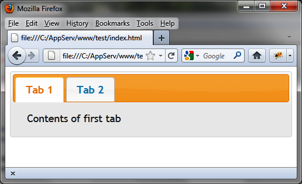

{% include JB/setup %}
{% raw %}
<div>
<div class="book" title="Change the CSS Theme"><div class="book"><div class="book"><div class="book"><h1 class="title2"><a id="change_the_css_theme" class="calibre1"></a>Change the CSS Theme</h1></div></div></div><p class="calibre7">The great thing about CSS themes is that they allow you change the
    look of your page easily—just change the directory name to that of the
    theme you want to use. For <span class="firstname">example,</span> let’s
    replace <em class="calibre4">smoothness</em> with <em class="calibre4">ui-lightness</em>.</p><p class="calibre7">For each base file in the uncompressed version of the page, simply
    replace the smoothness directory with ui-lightness (shown in bold
    here):</p><a id="I_programlisting1_d1e772" class="firstname"></a><pre class="programlisting">&lt;link rel=stylesheet type=text/css
      href=jqueryui/development-bundle/themes/<span class="firstname"><strong class="userinput">ui-lightness</strong></span>/jquery.ui.core.css /&gt;
&lt;link rel=stylesheet type=text/css
      href=jqueryui/development-bundle/themes/<span class="firstname"><strong class="userinput">ui-lightness</strong></span>/jquery.ui.theme.css /&gt;
&lt;link rel=stylesheet type=text/css
      href=jqueryui/development-bundle/themes/<strong class="userinput"><code class="userinput">ui-lightness</code></strong>/jquery.ui.tabs.css /&gt;</pre><p class="calibre7">For the base file in the compressed version of the page, replace the
    smoothness directory with ui-lightness (shown in bold here):</p><a id="I_programlisting1_d1e785" class="firstname"></a><pre class="programlisting">&lt;link rel=stylesheet type=text/css
      href=jqueryui/css/<strong class="userinput"><code class="userinput">ui-lightness</code></strong>/jquery-ui-1.8.16.custom.css /&gt;</pre><p class="calibre7">The HTML page will now use the new theme (shown in <a class="ulink" href="ch01s05.html#our_html_page_using_the_ui-lightness_the" title="Figure 1-6. Our HTML page using the ui-lightness theme">Figure 1-6</a>).</p><div class="book"><div class="figure"><a id="our_html_page_using_the_ui-lightness_the" class="firstname"></a><div class="book"><div class="book"><a id="I_mediaobject1_d1e797" class="firstname"></a></div></div><p class="title4">Figure 1-6. Our HTML page using the ui-lightness theme</p></div></div></div></div>

{% endraw %}

